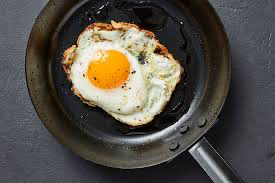

FRIED-EGG

DESCRIPTION
Fried egg is a cooked dish made from one or more eggs which are removed from their shells and placed into a frying pan and fried. They are traditionally eaten for breakfast in many countries but may also be served at other times of the day.
INGREDIENTS
- Egg
- Salt
- Onion
- Tomatoes
- Garlic
- Masala
STEPS
- Crack the egg and keep it in a bowl
- Chop onion. tomatoes and garlic
- Keep the chopped item in the bowl of egg according to your tase
- Also add some masala and salt according to your taste
- Stir the mixture of egg, chopped items and masala very well
- Oil up the pan and heat it in the stove
- Pour the mixture in the stove and fry it on both sides and enjoy